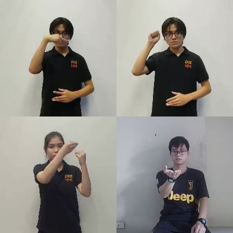

1. Đủ xa: thấy từ đầu đến thắt lưngCả hai tay luôn nằm trong khung. Laptop: đẩy máy ra xa hoặc lùi ghế, khoảng 1 m. Điện thoại: dựng cố định, đứng hoặc ngồi cách 1–1,5 m.✗ Quá gầnChỉ thấy đầu và vai, mất tay và thân. App sẽ báo “Lùi ra xa” và không cho quay.

2. Làm đủ động tác như video mẫuMỗi ký hiệu có video mẫu riêng (xem trước ở dưới). Khi quay, video hiện ở góc khung hình, đã lật như gương: làm giống hệt hình, cùng phía tay.
3. Bắt đầu và kết thúc ở tư thế nghỉ: hai tay chụm nhẹ trước bụng như ảnh đầu tiên. Đây là tư thế chung của hầu hết video mẫu, ở mọi ký hiệu. Đếm ngược thì giữ tư thế nghỉ, khung chuyển đỏ mới làm ký hiệu, làm xong đưa tay về tư thế nghỉ.
Mỗi lượt diễn ra thế nào
Đếm ngược 2 giâyHai tay chụm trước bụng, nhìn camera
Khung đỏ ~2,5 giâyLàm ký hiệu, xong đưa tay về trước bụng
Tự lưuTự quay lượt tiếp đến khi đủ, rồi sang ký hiệu sau
📷 Camera laptop hoặc camera trước điện thoại · mở bằng Chrome / Safari (không mở trong Zalo, Messenger) · đủ sáng, nền gọn, chỉ một người trong khung.
Xem trước 30 ký hiệu · bấm để xem video mẫu
Thông tin buổi quay
–
TayNgườiKhoảng cách
Mẫu · bấm để phóng to
Xem video mẫu
Hai tay chụm trước bụng, bấm Bắt đầu quay
Khung đỏ: làm đủ động tác, xong đưa tay về trước bụng